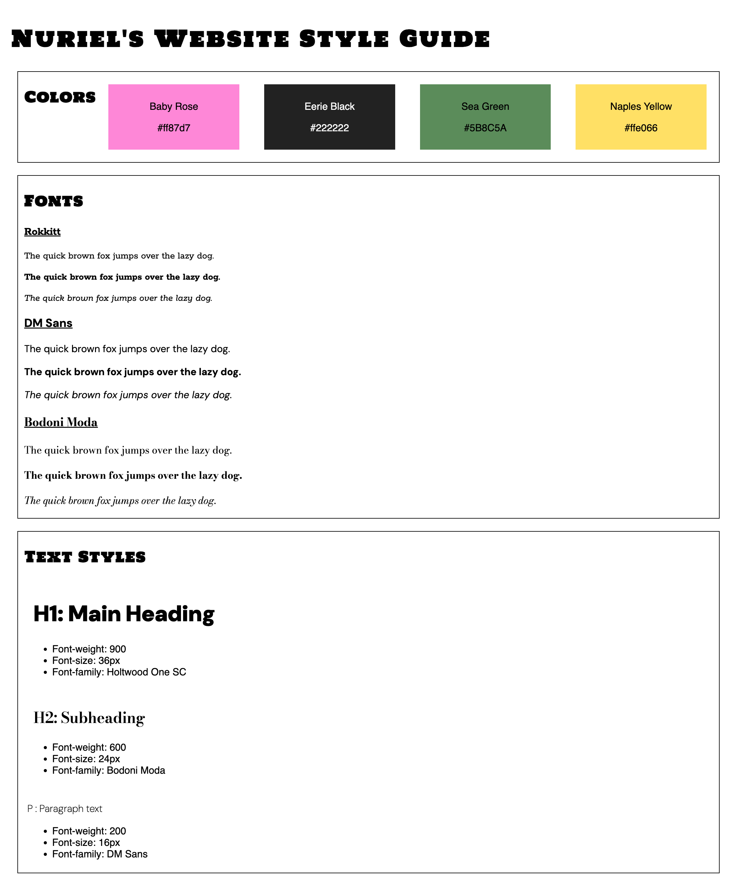

Projects
Pottery Site Recreation

An implentation of a webpage for an already existing pottery company, Pottery Studio.
HTML
CSS
Javascript
Website Style Guide

A customized style guide to use for a website. It includes a color palette and a list of font families and text styles.
HTML
CSS